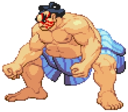
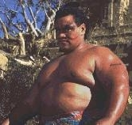
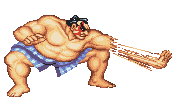

Os lutadores da série Street Fighter possuem golpes impossíveis, não seguindo fielmente o estilo de luta designado de cada lutador (Honda, por exemplo, tem o “golpe dos cem tapas”, quando começa a estapear seu adversário tão velozmente que dá a impressão de que sua mão se multiplicou). Ainda assim, Honda é bastante querido no Japão por ajudar a divulgar o sumô nos videogames.
Além de ser um dos personagens com maior número de fãs de um dos mais importantes jogos de luta da história do videogame, Honda também apareceu em filmes e animações relacionados à série Street Fighter. No longa-metragem lançado em 1994 (um dos piores filmes baseado em um jogo videogame de todos os tempos), Honda foi interpretado por um americano de origem samoana e não por um japonês, mas como a produção é dos Estados Unidos podemos desconsiderar a nacionalidade do ator como critério pra definir a do personagem.

Há também uma série animada feita nos Estados Unidos em que os lutadores do jogo fazem parte de uma equipe de heróis comandados por Guile (assim como no filme, qualquer coisa feita pelos norte-americanos traz como personagem principal seu compatriota).  Neste desenho, Honda é um hacker. Caso você faça questão de ver um desenho animado com o lutador gordinho, o ideal é buscar os animês, que são mais fiéis aos jogos.